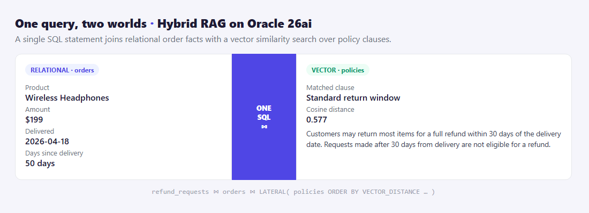
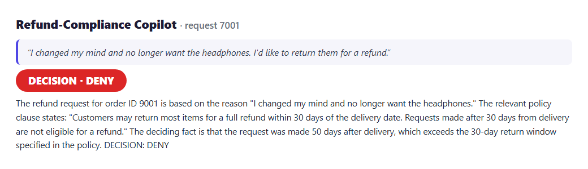

Answering a question that needs both your documents and your tables — in a single SQL statement, no bolt-on vector database.
Most "AI + database" demos keep two stores: a vector database for the unstructured stuff and your real database for the facts — with a layer of glue code stitching them together at query time. Oracle 26ai lets me delete that whole layer. Vectors and tables live in one database, so a single query can search by meaning and join to facts at the same time.
To show it, I built a small refund-compliance copilot.
A customer asks for a refund. To answer fairly you need two very different things:
Get either half wrong and the decision is wrong. The neat part is doing both in one go.
The copilot embeds the customer's reason, then runs a single statement that joins the order row to the nearest policy clauses via VECTOR_DISTANCE inside a CROSS JOIN LATERAL:

SELECT o.product, o.amount,
TRUNC(SYSDATE - o.delivered_date) AS days_since_delivery,
p.title, p.clause_text,
VECTOR_DISTANCE(p.embedding, :reason_vec, COSINE) AS policy_distance
FROM refund_requests r
JOIN orders o ON o.order_id = r.order_id
CROSS JOIN LATERAL (
SELECT title, clause_text, embedding
FROM policies
ORDER BY VECTOR_DISTANCE(embedding, :reason_vec, COSINE)
FETCH FIRST 2 ROWS ONLY
) p
WHERE r.request_id = :rid;With both halves in hand, the copilot reasons strictly from the retrieved clause and the order facts, then commits to a verdict — quoting the clause and the deciding fact:

VECTOR_DISTANCE sits in the same SELECT as your joins and filters — your existing skills apply.The agent reaches the database through the SQLcl MCP Server (sql -mcp), so it queries safely with a saved connection and every statement is audited.
"Hybrid search" usually means running two systems and merging results in your app. On Oracle 26ai it means writing one query. For any decision that blends what was said with what is true — refunds, claims, compliance, support — that's a genuinely simpler architecture.
A learning demo — not legal or financial advice.